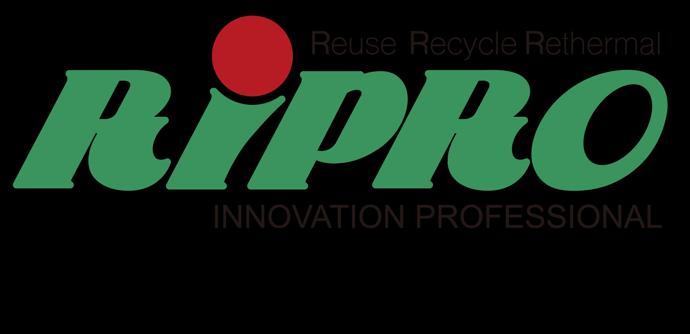
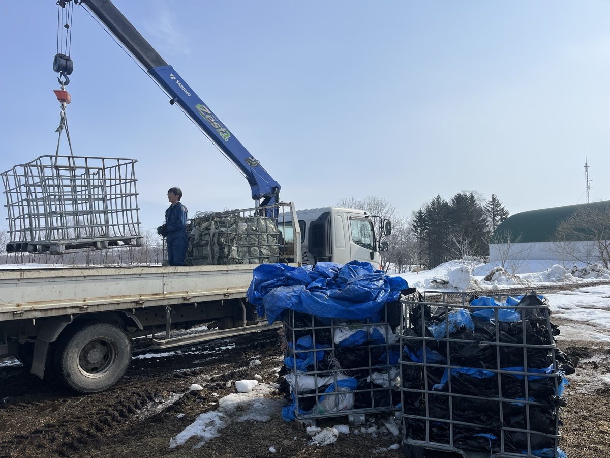

PHOTO · 回収作業
01
ためない — 毎月来るから敷地がキレイ
毎月決まった日にトラックが伺います。廃棄物が溜まる前に回収するから、敷地はいつもすっきり。景観も衛生環境も保てます。
- 月1回の固定スケジュール
- 集荷頻度はご相談可
- 急な量増にも柔軟に対応


ラップも、タイヤも、鉄くずも。
分け方がわからなくても大丈夫。
RiPROのトラックが、毎月あなたの牧場へ。
「捨てると公害、生かせば資源。」
PROBLEM
牧場経営で、こんな声をよく伺います。
片付けたいけれど、どこに頼めばいいかわからない。気づけば敷地の片隅に山積み。
ラップ、タイヤ、鉄くず…品目ごとに別の業者へ出すのは手間がかかる。
牛の世話に搾乳、餌やり。廃棄物を運ぶ余裕なんて正直ない。
いくらかかるか分からないと、問い合わせも一歩踏み出せない。
何をどう分ければよいか、気軽に聞ける相手もなかなかいない。
知らない業者に任せて、本当に適正に処理されるのか心配。
そのお悩み、RiPROの定期集荷がまるごと解決します。
MERIT
「ためない・まよわない・はこばない。」
牧場の暮らしに寄り添う仕組みです。
毎月決まった日にトラックが伺います。廃棄物が溜まる前に回収するから、敷地はいつもすっきり。景観も衛生環境も保てます。
「何がラップで、何が硬プラ？」そんな疑問も、回収スタッフが現場で直接ご説明。分別さえできれば処分費は半額になります。
敷地内の集積場所までトラックと重機で伺います。重たい廃タイヤも、大量のラップも、積み込みは全部お任せください。
SERVICE
カードをタップすると詳細と注意事項をご覧いただけます。
※ 別途 収集運搬費 1回 5,500円がかかります。
POINT
分け方がわからなくても、回収スタッフが現場でお教えします。
一般廃棄物は各町の対応となります
注射器・針・点滴・薬品容器など
PRICE
品目と量を入力すると、1回あたりの概算が自動で計算されます。
地域・農協によっては自己負担が大幅に軽減されます。補助金の申請もサポートいたしますので、詳しくはお問い合わせください。
CLEANUP
何年も溜まってしまった廃棄物、
まとめて一気に片付けます。
牛舎裏に溜め続けた廃プラと古タイヤをまとめて搬出。クリーンアップ後は月1回の定期集荷で、きれいな状態をキープ中です。
使わなくなった農機具と金属くずを重機で搬出。金属は1t以上だったため買取でお戻しできました。
機械代は別途。現地にてお見積り・ご提案いたします。
※ 定期回収ご契約者様が対象です。
VOICE
実際にご利用いただいている酪農家のみなさまから。
月1回来てくれるから、もう溜まらない。忙しい朝でも声をかければ分別を教えてくれるのがありがたいです。
8年分の廃プラを一気に片付けてもらえた。補助金の申請まで手伝ってもらえて、想像の半分以下で済みました。
相談した日のうちに見積りに来てくれた。金額がハッキリして、他と比べても分別すれば安い。もっと早く頼めばよかった。
FLOW
お電話1本から、最短2週間で定期集荷スタート。
廃棄物の種類や量、気になることをお伺いします。匿名のご相談も歓迎。
スタッフが牧場へ直接伺います。品目・量・集荷頻度を一緒に確認し、料金をご案内。
産業廃棄物処理委託契約書を締結。適正処理の証明書（マニフェスト）を発行します。
毎月決まった日にトラックが伺います。あとはお任せください。
MOVIE
実際の集荷作業と再資源化の現場をご覧ください。
FAQ
別海町全域に対応しております。近隣の中標津町、標津町、根室市などもご相談可能です。エリア外でも品目や量によってはお伺いできる場合がありますので、まずはお電話ください。
もちろん混合でも回収いたします（混合廃棄物 132円/kg）。分けていただくと半額（66円/kg）になるため、まずは出せる範囲でチャレンジしていただくのがおすすめです。回収スタッフがその場で分け方をご説明します。
もちろんです。お見積りは無料ですので、ご契約前にじっくりご検討いただけます。他社との比較にもお気軽にご利用ください。
毎月1回が基本ですが、量が多い時期は月2回、冬場は隔月など、ご相談に応じて調整可能です。急な量増にもできる限り対応いたします。
中山間地域の補助金対象となる場合が多く、地域・農協によっては自己負担が半額以下になるケースもあります。申請の書類作成もお手伝いしますので、お気軽にご相談ください。
銀行振込・請求書払いに対応しております。定期契約の場合は月末締め翌月末払いが基本です。ご希望の締め日・支払日があれば遠慮なくお伝えください。
ABOUT
代表挨拶
株式会社RiPRO代表の八木一洋です。別海町で農業廃棄物の回収を行っています。捨てるだけでなく、生かす。地域で出たものを地域で循環させることを大切にしています。お困りのことがあれば、まずは一声おかけください。
代表取締役 八木 一洋
| 会社名 | 株式会社RiPRO（リプロ） |
|---|---|
| 代表者 | 代表取締役 八木 一洋 |
| 所在地 | 〒086-0216 北海道野付郡別海町別海279番地1 |
| TEL / FAX | 0153-79-5005 ／ 0153-79-5006 |
| 事業内容 | 産業廃棄物の収集運搬・処分・再資源化 |
| 許可 | 北海道知事 産業廃棄物収集運搬業 許可 |
CONTACT
お見積り無料。
まずはお気軽にご連絡ください。